1056B90 SYSTEM CABLE BUNDLE - R + R
- Path
- Procedures > 10 ENGINE UNIT > 1056 PETROL INJECTION SYSTEM > 1056B MULTI-POINT INJECTION SYSTEM (MPI) > 1056B90 SYSTEM CABLE BUNDLE - R + R
- Kind
- repair procedure (removal / refitting; the operation number is the code)
- Applies to
- engines: 1.8 T.SPARK, 3.2 V6; all production periods
- Interactive page
- https://sloeber94.github.io/elrnDB-aGt/en/#/125002609
Applies to: engines: 3.2 V6; all production periods
 Removing
Removing
 Refitting
RefittingPosition the vehicle on a lift.
Make sure that the ignition key is in the OFF position, then disconnect the negative battery terminal (-).
Description | Connector | |
|---|---|---|
- | Battery |
Proceed with the removal
Op. 7055B54 UNDER-ENGINE GUARD - R R.
1. Disconnect the electrical connection for the air conditioning compressor electro-magnet coupling.
Description | Connector | |
|---|---|---|
1 | Air conditioning compressor engagement electro-magnet | See L20 AIR CONDITIONING COMPRESSOR ENGAGEMENT ELECTRO-MAGNET ( CONNECTORS ) |
2. Disconnect the electrical connection for the left upper Lambda sensor.
Description | Connector | |
|---|---|---|
2 | Lambda sensor on pre-catalyzer |
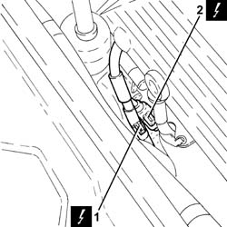
Applies to: engines: 3.2 V6; all production periods
1. Loosen the band (1a) and disconnect the oil vapour recirculation pipe (1b) from the corrugated hose.
2. Loosen the bands (2a) and remove the corrugated hose (2b) complete with resonator (2c).
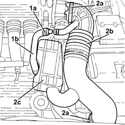
Applies to: engines: 3.2 V6; all production periods
Proceed with the removal
Op. 1016A42 LEFT HAND CYLINDER HEAD IGNITION COIL COVER - R+R.
1. Disconnect the electrical connections from the left cylinder head ignition coils.
Description | Connector | |
|---|---|---|
1 | Ignition coil |
2. Disconnect the electrical connections from the left cylinder head injectors.
Description | Connector | |
|---|---|---|
2 | Injector |
3. Undo the bolts (3a) fixing the cable duct (3b) to the left side of the tappet cover.
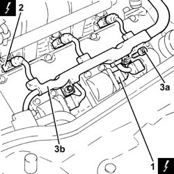
Applies to: engines: 3.2 V6; all production periods
1. Open the electrical connection holder case.
2. Disconnect the electrical connection for the right upper Lambda sensor.
Description | Connector | |
|---|---|---|
2 | Lambda sensor on pre-catalyzer - 2 |
3. Disconnect the electrical connection for the rpm sensor.
Description | Connector | |
|---|---|---|
3 | Rpm sensor |
4. Disconnect the electrical connection for the cam angle sensor.
Description | Connector | |
|---|---|---|
4 | Timing sensor |
5. Disconnect the electrical connection for the flywheel side knock sensor.
Description | Connector | |
|---|---|---|
5 | Detonation sensor -1 |
6. Undo the nut (6a) and disconnect the earth lead (6b) from the left side of the tappet cover.
Description | Connector | |
|---|---|---|
6b | Earth on engine |
7. Disconnect the electrical connection from the engine coolant temperature sensor.
Description | Connector | |
|---|---|---|
7 | Engine temperature sending unit |
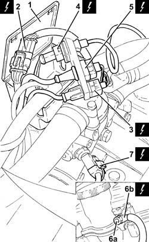
Applies to: engines: 3.2 V6; all production periods
1. Disconnect the electrical connection.
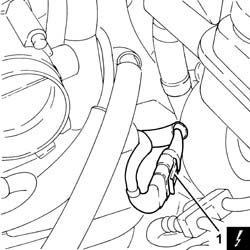
Applies to: engines: 3.2 V6; all production periods
Proceed with the removal
Op. 1072B50 SLEEVES CONNECTING AIR CAPACITY BOX TO INLET MANIFOLD IS - R+R.
1. Disconnect the electrical connections from the right cylinder head ignition coils.
Description | Connector | |
|---|---|---|
1 | Ignition coil |
2. Disconnect the electrical connections from the right cylinder head injectors.
Description | Connector | |
|---|---|---|
2 | Injector |
3. Undo the bolts (3a) fixing the cable duct (3b) to the right side of the tappet cover.
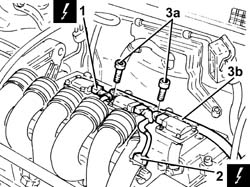
Applies to: engines: 3.2 V6; all production periods
Remove the system cable loom after having released it from the fastenings.
Applies to: engines: 3.2 V6; all production periods
Refitting
RemovingPlace the system cable loom back in its housing and fasten it using the bands.
Tighten the bolts fixing the cable duct to the right side of the tappet cover.
Connect the electrical connections to the right cylinder head injectors.
Connect the electrical connections to the right cylinder head ignition coils.
Proceed with the refitting
Op. 1072B50 SLEEVES CONNECTING AIR CAPACITY BOX TO INLET MANIFOLD IS - R+R.
Connect the electrical connection.
Connect the electrical connection to the engine coolant temperature sensor.
Connect the earth lead to the left side of the tappet cover and tighten the nut.
Connect the electrical connection for the flywheel side knock sensor.
Connect the electrical connection for the cam angle sensor.
Connect the electrical connection for the rpm sensor.
Connect the electrical connection for the right upper Lambda sensor.
Close the electrical connection holder case.
Tighten the bolts fixing the cable duct to the left side of the tappet cover.
Connect the electrical connections to the left cylinder head injectors.
Connect the electrical connections to the left cylinder head ignition coils.
Proceed with the refitting
Op. 1016A42 LEFT HAND CYLINDER HEAD IGNITION COIL COVER - R+R.
Place the corrugated hose complete with resonator back in its housing and tighten the bands.
Connect the oil vapour recirculation hose to the corrugated hose and tighten the band.
Connect the electrical connection for the left upper Lambda sensor.
Connect the electrical connection for the air conditioning compressor electro-magnet coupling.
Proceed with the refitting
Op. 7055B54 UNDER-ENGINE GUARD - R R.
Connect the negative battery terminal (-).
Remove the vehicle from the lift.
Applies to: engines: 1.8 T.SPARK; all production periods
Removing
RefittingPosition the vehicle on a lift.
Make sure that the ignition key is in the OFF position, then disconnect the negative battery terminal.
Description | Connector | |
|---|---|---|
- | Battery | Vedere A1B BATTERIA ( CABLAGGI ) |
1. Disconnect the oil vapour recovery pipe from the air intake hose.
2. Disconnect the intake hose from the throttle casing integrated with the D.V.L. and move it to the side.

Applies to: engines: 1.8 T.SPARK; all production periods
1. Disconnect the electrical connection for the air conditioning compressor electro-magnet coupling.
Description | Connector | |
|---|---|---|
1 | Air conditioning compressor engagement electro-magnet | Vedere L20 ELETTROMAGNETE INSERIMENTO COMPRESSORE CONDIZIONAT ( MOTORE ) |
2. Disconnect the electrical connections (2a) and (2b) for the Lambda sensors.
Description | Connector | |
|---|---|---|
2a | Lambda sensor on pre-catalyzer - 2 | K16 |
Description | Connector | |
|---|---|---|
2b | Lambda sensor on pre-catalyzer | Vedere K15 SONDA LAMBDA SU PRE-CATALIZZATORE ( MOTORE ) |

Applies to: engines: 1.8 T.SPARK; all production periods
Proceed with the removal
Op. 1016A40 IGNITION COIL COVER ON CYLINDER HEAD- R+R.
1. Disconnect the electrical connections from the ignition coils.
Description | Connector | |
|---|---|---|
1 | Ignition coil | Vedere A30 BOBINA DI ACCENSIONE |
2. Release the electrical wiring from the fastenings on the tappet cover.
3. Undo the bolt (3a) and disconnect the earth lead (3b) from the ignition coil single mounting plate.
Description | Connector | |
|---|---|---|
3b | Earth on engine | Vedere C40B MASSA SU MOTORE ( MOTORE ) |

Applies to: engines: 1.8 T.SPARK; all production periods
1. Disconnect the electrical connections from the injectors.
Description | Connector | |
|---|---|---|
1 | Injector | Vedere N70 ELETTROINIETTORE |
2. Disconnect the electrical connection from the phase transformer solenoid.
Description | Connector | |
|---|---|---|
2 | Variable valve timing solenoid | See K98 PHASE TRANSFORMER SOLENOID |
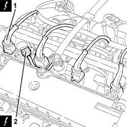
Applies to: engines: 1.8 T.SPARK; all production periods
1. Disconnect the electrical connection from the engine coolant temperature sensor.
Description | Connector | |
|---|---|---|
1 | Engine temperature sending unit | Vedere K36 TRASMETTITORE TEMPERATURA MOTORE ( MOTORE ) |
2. Undo the nut (2a) and disconnect the earth lead (2b) from the intake manifold.
Description | Connector | |
|---|---|---|
2b | Earth on engine | Vedere C40A MASSA SU MOTORE ( MOTORE ) |

Applies to: engines: 1.8 T.SPARK; all production periods
1. Disconnect the electrical connection from the injection/ignition control unit.
Description | Connector | |
|---|---|---|
1 | Engine management control unit | Vedere M10A CENTRALINA CONTROLLO MOTORE ( CABLAGGI ) |
2. Undo the bolt (2a) and disconnect the earth lead (2b) from the injection/ignition control unit mounting.
Description | Connector | |
|---|---|---|
2b | Earth on engine | Vedere C40C MASSA SU MOTORE ( MOTORE ) |
3. Disconnect the electrical connection from the throttle casing integrated with D.V.L. and release the electrical wiring from the fastening.
Description | Connector | |
|---|---|---|
3 | Throttle body actuator | Vedere N75 ATTUATORE CORPO FARFALLATO ( MOTORE ) |
4. Disconnect the electrical connection from the fuel vapour solenoid valve.
Description | Connector | |
|---|---|---|
4 | Fuel vapour recovery solenoid valve |

Applies to: engines: 1.8 T.SPARK; all production periods
1. Disconnect the engine front coupling.
Description | Connector | |
|---|---|---|
1 | Front/engine coupling | Vedere D4 GIUNZIONE ANTERIORE / MOTORE ( MOTORE ) |
2. Disconnect the electrical connection for the detonation sensor.
Description | Connector | |
|---|---|---|
2 | Detonation sensor |
3. Disconnect the electrical connection for the Lambda sensor.
Description | Connector | |
|---|---|---|
3 | Lambda sensor on catalyzer |
4. Disconnect the electrical connection for the cam angle sensor.
Description | Connector | |
|---|---|---|
4 | Timing sensor |
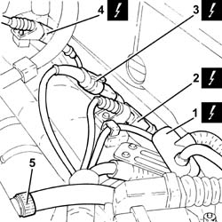
Applies to: engines: 1.8 T.SPARK; all production periods
Release the system cable loom from the fastenings on the air chamber.
Proceed with the removal
Op. 1072C44 EXHAUST MANIFOLD HEAT SHIELD ON BULKHEAD - R+R.
1. Undo the nuts fixing the catalytic preconverter to the exhaust manifold.
2. Undo the nuts fixing the catalytic preconverter to the catalytic converter.
3. Undo the bolts securing the catalytic preconverter mounting bracket to the engine block.
4. Undo the bolt fixing the catalytic preconverter flexible mounting to the front suspension crossmember.
5. Remove the catalytic preconverter complete with Lambda sensors.
Remove the seals.
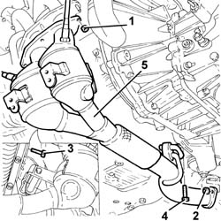
Applies to: engines: 1.8 T.SPARK; all production periods
1. Disconnect the electrical connection for the rpm sensor.
Description | Connector | |
|---|---|---|
1 | Rpm sensor |
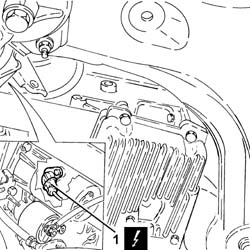
Applies to: engines: 1.8 T.SPARK; all production periods
1. Undo the nut (1a) and disconnect the supply lead (1b) from the alternator.
Description | Connector | |
|---|---|---|
1b | Alternator | Vedere A10A ALTERNATORE ( MOTORE ) |
2. Undo the nut (2a) and disconnect the supply lead (2b) from the starter motor.
Description | Connector | |
|---|---|---|
2b | Starter motor |

Applies to: engines: 1.8 T.SPARK; all production periods
1. Disconnect the electrical connection from the insufficient engine oil pressure warning light sensor.
Description | Connector | |
|---|---|---|
1 | Engine oil pressure sensor (switch) | Vedere K30 SENSORE (INTERRUTTORE) PRESSIONE OLIO MOTORE ( MOTORE ) |
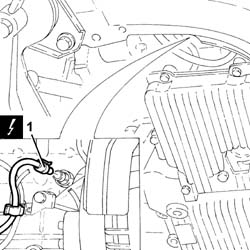
Applies to: engines: 1.8 T.SPARK; all production periods
Remove the system cable loom.
Applies to: engines: 1.8 T.SPARK; all production periods
Refitting
RemovingPlace the system cable loom in position.
Connect the electrical connection to the insufficient engine oil pressure warning light sensor.
Connect the earth lead to the starter motor and secure it using the nut.
Connect the earth lead to the alternator and secure it using the nut.
Connect the electrical connection for the rpm sensor.
1. Place the catalytic preconverter complete with Lambda sensors and seals in position.
2. Tighten the bolt fixing the catalytic preconverter flexible mounting to the front suspension crossmember.
3. Tighten the bolts securing the catalytic preconverter mounting bracket to the engine block.
4. Tighten the nuts fixing the catalytic preconverter to the catalytic converter to the recommended torque.
Fastening | Component | Ø | Value (daNm) | |
|---|---|---|---|---|
4 | Nut | CATALYTIC PRE-CONVERTER | M8 | (Catalytic converter side) 2.7 - 3.3 |
5. Tighten the nuts fixing the catalytic preconverter to the exhaust manifold to the recommended torque.
Fastening | Component | Ø | Value (daNm) | |
|---|---|---|---|---|
5 | Nut | CATALYTIC PRE-CONVERTER | M8 | (Manifold side) 2.7 - 3.3 |

Applies to: engines: 1.8 T.SPARK; all production periods
Proceed with the refitting
Op. 1072C44 EXHAUST MANIFOLD HEAT SHIELD ON BULKHEAD - R+R.
Fasten the system cable loom using the fastenings to the air chamber.
Connect the electrical connection for the cam angle sensor.
Connect the electrical connection for the Lambda sensor.
Connect the electrical connection to the detonation sensor.
Connect the engine front coupling.
Connect the electrical connection to the fuel vapour solenoid valve.
Connect the electrical connection to the throttle casing integrated with D.V.L. and fasten the electrical wiring.
Connect the earth lead to the injection/ignition control unit mounting and secure it using the bolt.
Connect the electrical connection to the injection/ignition control unit.
Connect the earth lead to the intake manifold and secure it using the nut.
Connect the electrical connection to the engine coolant temperature sensor.
Connect the electrical connection for the phase transformer solenoid.
Connect the electrical connections to the injectors.
Connect the earth lead to the ignition coil single mounting plate and secure it using the bolt.
Secure the electrical wiring using the fastenings to the tappet cover.
Connect the electrical connections to the ignition coils.
Proceed with the refitting
Op. 1016A40 IGNITION COIL COVER ON CYLINDER HEAD- R+R.
Connect the electrical connections for the Lambda sensors.
Connect the electrical connection for the air conditioning compressor electro-magnet coupling.
Place the inlet house in position and connect it tothe throttle casing integrated with the D.V.L.
Connect the oil vapour recovery pipe to the air intake hose.
Connect the negative battery terminal (-).
Remove the vehicle from the lift.
Topics linked from this page (19)
- 1016A40 IGNITION COIL COVER ON CYLINDER HEAD- R+R
- 1016A42 LEFT HAND CYLINDER HEAD IGNITION COIL COVER - R+R
- 1072B50 SLEEVES CONNECTING AIR CAPACITY BOX TO INLET MANIFOLD IS - R+R
- 1072C44 EXHAUST MANIFOLD HEAT SHIELD ON BULKHEAD - R+R
- 7055B54 UNDER-ENGINE GUARD - R R
- A1B Battery ( BATTERY NEGATIVE )
- A20 Starter' motor
- A30 Ignition coil
- C40 Earth on engine
- K15 Lambda sensor on pre-catalyzer
- K16 Lambda sensor on pre-catalyzer -2
- K17 Lambda sensor on catalyzer
- K36 Engine temperature sender unit
- K46 Rpm sensor
- K47 Timing sensor.
- K50 Detonation sensor 1
- L10 Fuel vapour recovery solenoid
- L20 Air conditioning compressor engagement electro-magnet
- N70 Injector